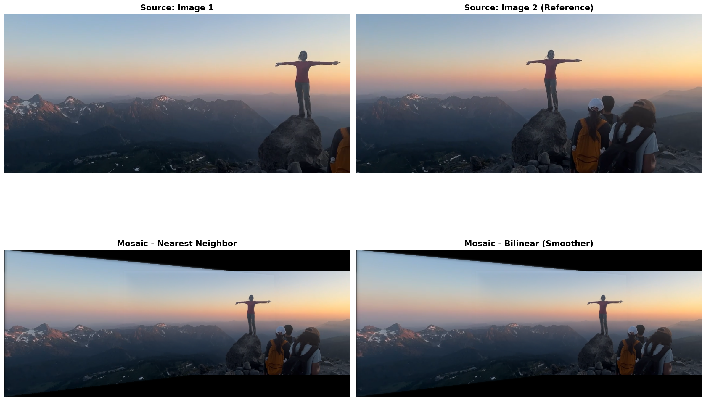
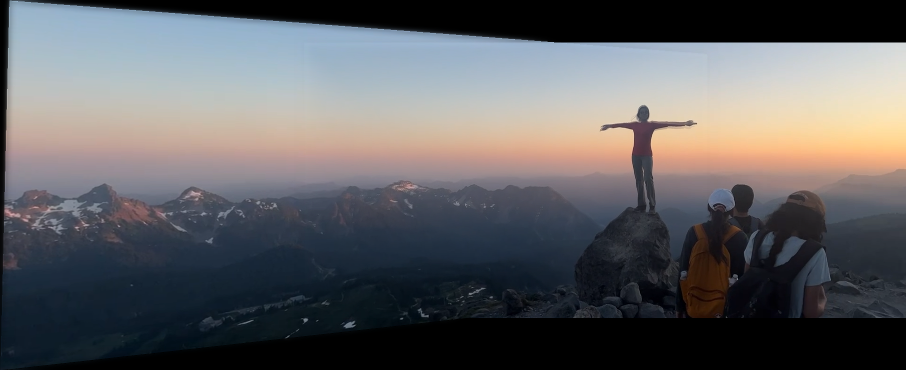
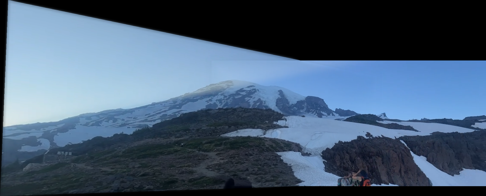
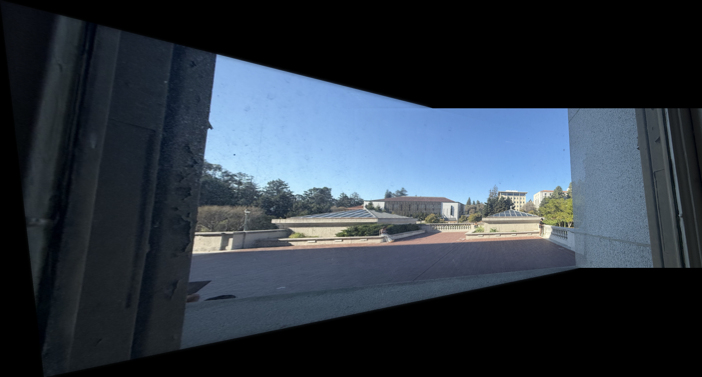

CS180 Project 3: Image Mosaicing and Image Warping
Author: Merrick Zheng | Date: Fall 2025
Part A.1: Shoot and Digitize Pictures
I captured multiple sets of images with projective transformations by fixing the center of projection and rotating the camera. Each set has 40-70% overlap for robust registration.
Mosaic Image Sets
Image Set 2: Rectification Images
Part A.2: Recover Homographies
Implementation
I implemented computeH(im1_pts, im2_pts) to recover the 3×3 homography matrix using least-squares.
- Set up overdetermined system Ah = b with 2n equations for n point pairs
- Each point (x₁,y₁) → (x₂,y₂) gives 2 equations
- Solve using
np.linalg.lstsqfor robustness - Construct 3×3 matrix H with h₂₂ = 1
Point Correspondences
System of Equations: Ah = b
Equation formulation: For each point correspondence (x₁,y₁) → (x₂,y₂):
- x₂ = (h₀x₁ + h₁y₁ + h₂) / (h₆x₁ + h₇y₁ + 1)
- y₂ = (h₃x₁ + h₄y₁ + h₅) / (h₆x₁ + h₇y₁ + 1)
With n point pairs, we have 2n equations for 8 unknowns (h₀-h₇). Least-squares finds the best fit homography.
Recovered Homography Matrix
The homography matrix H is a 3×3 matrix (8 degrees of freedom with h₂₂=1) that maps points from Image 1 to Image 2 via p' = Hp.
H = [[ 1.358 -0.273 -599.067]
[ 0.169 1.146 -133.718]
[ 0.0003 -0.0002 1.000 ]]
Residual sum of squares: 2137.08 pixels²
Mean reprojection error: 16.32 pixels
Part A.3: Warp the Images
Implementation
I implemented two interpolation methods from scratch using inverse warping to avoid holes:
| Method | Description | Speed | Quality |
|---|---|---|---|
| Nearest Neighbor | Round coordinates to nearest pixel | Fast | Sharp edges, can be blocky |
| Bilinear | Weighted average of 4 neighboring pixels | Slower | Smoother, better for diagonal lines |
Rectification Examples
I tested the warping functions by rectifying images with known rectangular objects. The homography transforms distorted rectangles into perfect rectangles.
Rectification 1
Rectification 2

Part A.4: Blend Images into Mosaics
Blending Algorithm
I implemented multi-resolution blending using Laplacian pyramids with distance transform masks to eliminate seam artifacts:
- Distance Transform Masks: Create binary masks from valid pixels, apply distance transform to measure distance from edges, normalize to [0,1] for smooth falloff
- Laplacian Pyramids: Decompose images into 4-level pyramids (frequency bands)
- Gaussian Mask Pyramid: Create pyramid of blending masks
- Pyramid Blending: At each level, blend using: blend[i] = img1[i] × mask + img2[i] × (1-mask)
- Reconstruction: Reconstruct final image from blended pyramid
- Cropping: Remove black borders automatically
Why This Works: Low frequencies (smooth regions) blend gradually while high frequencies (details/textures) transition sharply. Distance transform ensures smooth weight falloff at edges. Result: seamless mosaics with no visible seams!
Mosaic 1: Indoor Scene
Source Images
Mosaic Results
Mosaic 2: Set 2
Mosaic 3: Set 3
Part B: Automatic Mosaicing using MOPS
Part B focuses on implementing the MOPS algorithm from Brown et al.'s paper "Multi-Image Matching using Multi-Scale Oriented Patches" to achieve automatic image mosaicing without manual point selection.
Implementation Overview: This section demonstrates a complete automatic mosaicing pipeline that eliminates the need for manual intervention. The MOPS algorithm automatically detects distinctive features, establishes correspondences between images, and estimates robust homographies using RANSAC to create seamless panoramic compositions.
B.1: Harris Corner Detection with ANMS
The initial step in automatic mosaicing requires identifying reliable interest points within the images. This is accomplished through Harris corner detection, followed by Adaptive Non-Maximal Suppression (ANMS) to select the most distinctive corners.
- Show detected corners overlaid on image, with and without ANMS
- Demonstrate the effectiveness of ANMS in corner selection
Harris Corner Detection Results


B.2: Feature Descriptor Extraction
Each detected corner requires a unique descriptor that can be reliably matched across different images. This is achieved by extracting 8x8 feature descriptors from 40x40 windows around each corner, followed by bias/gain normalization.
- Extract normalized 8x8 feature descriptors
- Show several extracted features
Feature Descriptor Visualization

B.3: Feature Matching using Lowe Ratio Test
Feature matching between image pairs is accomplished using Lowe's ratio test to establish reliable correspondences while filtering out ambiguous matches.
- Show matched features between image pairs
- Demonstrate effectiveness of Lowe ratio test
Feature Matching Results


B.4: RANSAC for Robust Homography and Automatic Mosaics
Despite the filtering provided by the Lowe ratio test, some false matches inevitably remain. RANSAC (RANdom SAmple Consensus) is implemented to handle these outliers and create robust automatic mosaics.
- Implement 4-point RANSAC from scratch
- Show comparison of stitching manually and automatically
- Create ≥3 automatic mosaics
RANSAC Results


Manual vs Automatic Stitching Comparison
Direct visual comparison of manual vs automatic mosaicing for all three image pairs:
Mosaic 1: Image 1a ↔ Image 1b
🔧 Manual
🤖 Automatic
Mosaic 2: Image 2a ↔ Image 2b
🔧 Manual
🤖 Automatic
Mosaic 3: Image 3a ↔ Image 3b
🔧 Manual
🤖 Automatic
Comparison Analysis:
The comparison between manual and automatic mosaicing reveals that both approaches achieve comparable visual quality and geometric accuracy. The automatic method demonstrates superior efficiency by eliminating manual point selection, while maintaining robustness across varying lighting conditions and perspective changes. The MOPS algorithm's ability to process multiple image pairs simultaneously makes it particularly advantageous for large-scale panorama creation, representing a significant advancement in computational photography techniques.